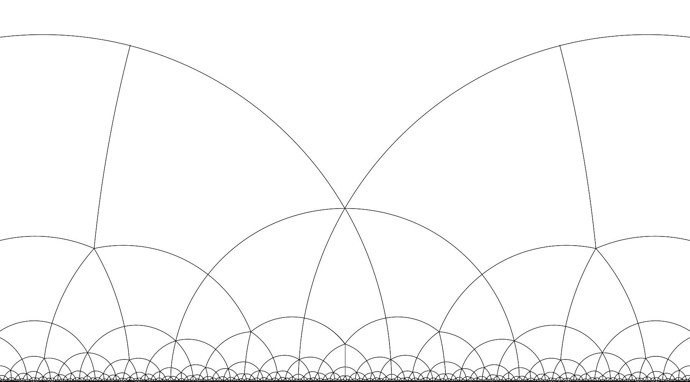

(日程)2025年9月8日(月)-10日(水)
(会場)お茶の水女子大学 理学部1号館621室
アクセス方法はこちら
講演プログラム
企画講演
- 足立真訓(静岡大学)
「L2理論による多変数函数論速成コース」, 「レビ平坦面に関する諸問題」 - 奥山裕介(京都工芸繊維大学)
「速習複素力学系」, 「複素力学系の値分布への応用」
一般講演
- Lecorché Adriaan （東北大学）
- 大岩亮太（九州大学 数理学府）
- 大屋壮（九州大学大学院 数理学府 数理学専攻）
- 咲田秀太（東北大学 情報科学研究科 ）
- 佐藤晴佳（お茶の水女子大学院 人間文化創成科学研究科）
- 下雅意茉夢（九州大学大学院 数理学府 数理学専攻）
- 鈴木良明（新潟大学）
- 髙倉真和（東京都立大学 理学研究科 数理科学専攻）
- 内本諒（九州大学）
- 稲葉真道（東北大学 情報科学研究科 ）
- 松田凌（京都大学 理学研究科）
- 松本周也（東京大学 数理科学研究科）
- 宮崎泰一（九州大学 理学部 数学科）
- 宮武夏雄（東北大学 数理科学共創社会センター）
- 村上怜（東北大学）
- 二松晃啓（名古屋大学大学院 多元数理科学研究科）
- 和久田葵（東京大学 数理科学研究科）
- Zhao Yannian（金沢大学）
- 山田耕平（新潟大学）
この集会は以下の科学研究費補助金の補助により開催されます.
- 基盤研究(B)「複素および非アルキメデス的力学系の安定性と無限次元軌道空間の解析」 研究課題番号24K00533; 代表: 川平友規 (一橋大学)
- 基盤研究(B)「標準束の複素幾何学; 標準計量の退化と漸近挙動の研究」 研究課題番号23K20792; 代表: 高山茂晴 (東京大学)
- 基盤研究(B)「レブナー方程式とタイヒミュラー空間論」 研究課題番号23K25775; 代表: 松崎克彦 (早稲田大学)
世話人
- 千葉優作(お茶の水女子大学)
- 久本智之(東京都立大学)
